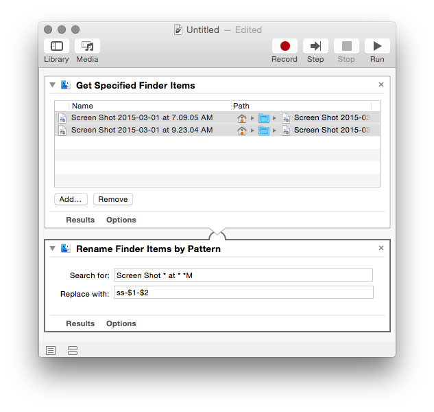

Rename Finder Items Action
Automator is superb for throwing together simple workflows for things you do all the time or for repetitive actions on groups of files, photos, movies, etc and it has a pretty good set of built in actions. The only built in file rename action, _Rename Finder Items_, can do simple replacements or date/time and sequential renaming but if you need to do something more complex, you're out of luck.
Rename Finder Items by Pattern is an Automator action that is similar to the built in Rename Finder Items action that can handle pattern matches with wildcards like this:
- Input File:
Screen shot 2015-02-13 at 7.35.03 PM - Search For:
Screen shot * at * *M - Replace With:
$1-$2-$3M - Output File:
2015-02-13-7.35.03-PM
You can use as many wildcards as you like in the search pattern. You can use any of them as many times as you like in the replacement pattern by number preceded by a "$". If no match is found for a wildcard, it is substituted with a blank in the replacement pattern.
It's available for free for anyone to use or modify.
Go grab the source or the 0.1 build packaged in a DMG from GitHub and give it a whirl.
Notes
Originally, I intended to create an action that used regular expressions for search and replace, but ran into difficulties getting Xcode to generate a bundle with an embedded framework (RegexKit in this case) that would load properly when Automator loaded the action bundle. Hopefully, I'll figure out how and the next version will be much more powerful.